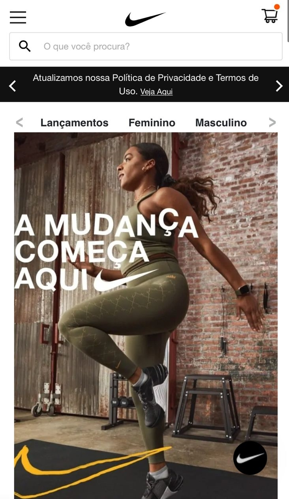
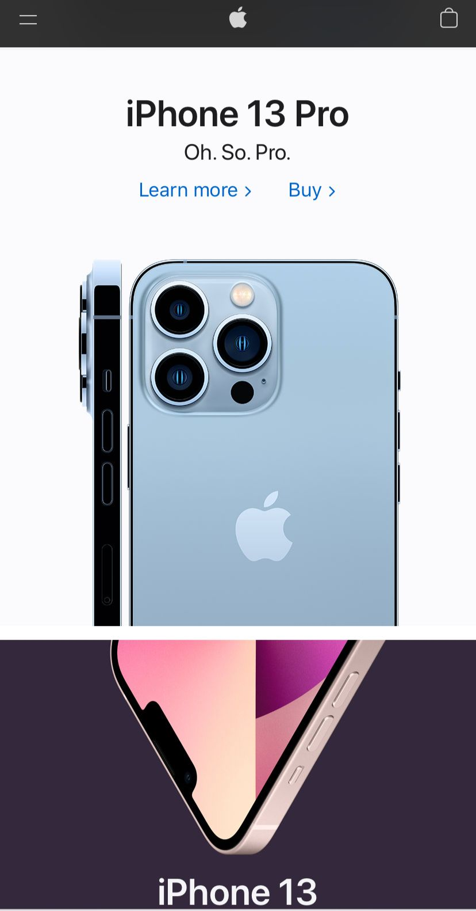

Visual Hierarchy Design
Nike
Nike website is a really good example of Visual Hierarchy Design. Visual hierarchy is related to all the elements you see in a design and how they are perceived in order of importance. When you first open it on your browser, it's clear they want your attention on a specif thing.
The main images are about new collections, promotions and favorite products, while they let less important things such the categories or the main menu. The screenshot above is from the brazilian version on the website, but the american one works the same way.
Fitt's Law
Nintendo
I love Nintendo games. Always when I use their online store and, eventually, their website. Both are really intuitive. Every button is close to your finger or your mouse. Always when I access this website, usually on my mobilde device, everythings is really close to my finger, so I can click on everything and it won't be difficult to reach the target.
At the bottom of the page, you can see how easy it is to reach the main menu, to search, take a look at the deals and games for your console. I think Fitt's Law's formula totally works on this example.
Rule of Thirds
Apple
One main use of the Rule of Thirds web design is determining how to space your images on the screen. When I first access the website above, it was incredible how the images fit on my mobile browser. It's everything perfectly matching to the target and the focus of the page. It's really related to the grid design, where each part has its own part to exist on the webpage.
Rule of Thirds probably will be one of the most used design rule by us. It's a simple way to make your website organized, using the images, spaces and layout to your favor.